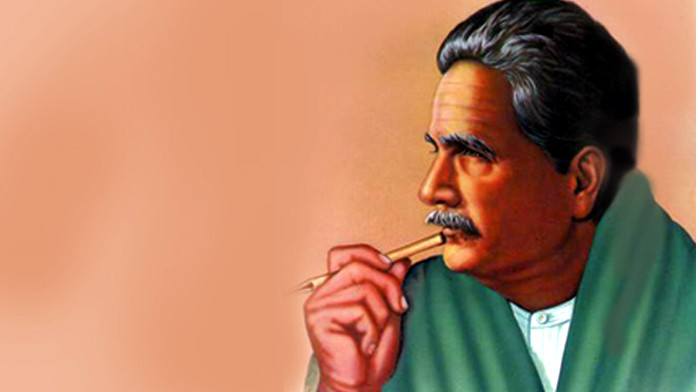

Muhammad Iqbal
The Poet, The Dreamer And The Legend

Ideological Founder of Pakistan
- 1877 - Iqbal was born on 9 November 1877 in an ethnic Kashmiri family in Sialkot within the Punjab Province of British India (now in Pakistan)
- 1881 - Learned Arabic language and Quran at the young age of 4 years old
- 1893 - Matriculated from Scotch Mission College
- 1895 - He received Intermediate with the Faculty of Arts diploma
- 1897 - From Government College University, where he obtained his Bachelor of Arts in philosophy, English literature and Arabic
- 1899 - Completed his Masters from the same University
- 1905 - Iqbal was influenced by the teachings of Sir Thomas Arnold, his philosophy teacher at Government College Lahore. Arnold's teachings convinced Iqbal to pursue higher education and He travalled to England
- 1908 - He completed his education and came back and became a teacher
Here's a time line of Iqbal's life
"Nations are born in the hearts of poets, they prosper and die in the hands of politicians."~Allama Iqbal